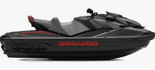
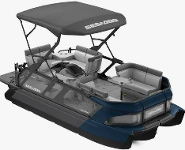

During this internship, responsibilities included designing and testing electrical and mechanical systems, performing data analysis, and supporting prototype testing.

Sea-Doo Personnal Water Craft (PWC) .

Sea-Doo Pontoon .
Assembled and validated electrical subsystems for a seadoo in a briefcase (compact model of the electrical systems only) by following the electrical diagrams
Analyzed test data and provided recommendations to improve electrical system performance
Analyzed and resolved audio system issues on some sea-doo models
Conducted electrical and software testing on Sea-Doo vehicles, with a strong focus on CAN protocol
communication and debugging C code